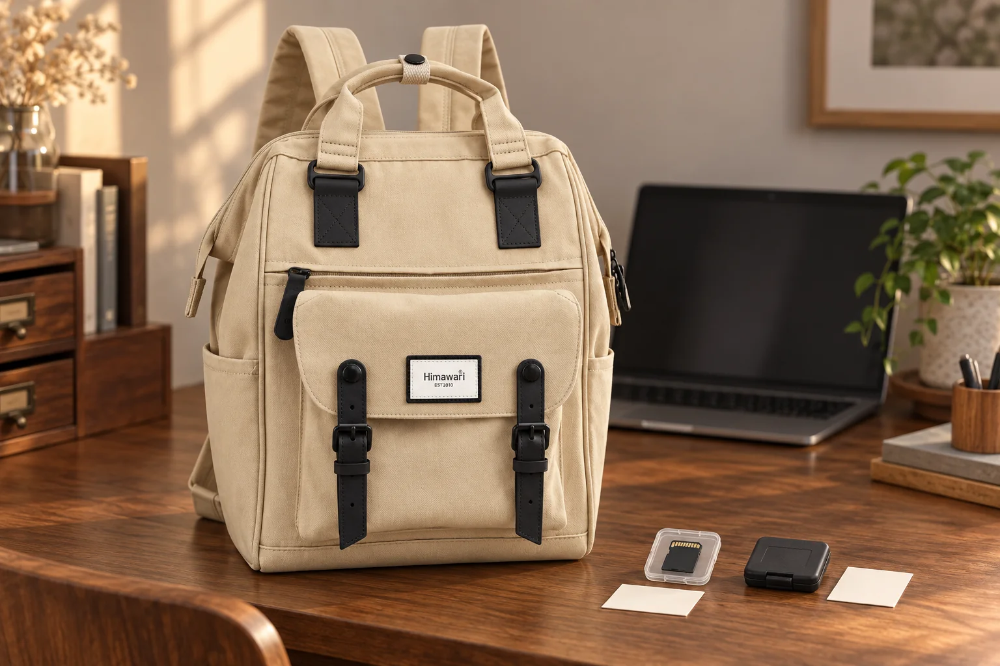

촬영을 마친 메모리카드, 백팩 속 빈 카드와 구분해두기

촬영을 끝내고 메모리카드를 교체했습니다. 손에 든 작은 카드가 오늘 찍은 사진이 든 것인지, 다음에 쓸 것인지 잠깐 헷갈립니다. 카메라와 렌즈의 자리를 정하는 일에 더해, 카드의 현재 상태를 구분해두면 집에 돌아와 파일을 확인할 때도 흐름이 이어집니다.
기록 중인지 먼저 확인합니다
카드를 꺼내기 전에는 카메라의 상태와 설명서를 확인합니다. Sony 카메라 도움말의 메모리카드 주의사항는 접근 표시등이 켜진 동안 카드나 배터리를 빼거나 전원을 끄면 데이터가 손상될 수 있다고 안내합니다. 사진이 화면에 보인다는 이유만으로 기록이 끝났다고 짐작하지 마세요. 표시 방식과 분리 절차는 사용하는 카메라의 설명서를 기준으로 합니다.
촬영한 카드와 준비한 카드의 자리를 나눕니다
두 카드가 같은 모양이라면 케이스의 칸이나 별도 작은 메모로 상태를 구분합니다. 오늘 촬영한 카드는 한 자리, 다음 촬영을 위해 확인한 카드는 다른 자리에 둡니다. 내용을 보지 않은 채 겉모양만으로 빈 카드라고 부르지 마세요. 기록 날짜를 메모할 때도 카드의 접점이나 몸체에 임의로 표시하는 대신 케이스 바깥의 메모를 활용합니다. 닫은 케이스를 다시 꺼냈을 때도 구분이 유지되는지가 중요합니다.
귀가 후 파일을 확인하기 전에는 재사용하지 않습니다
촬영한 카드에서 필요한 파일을 옮기고, 옮긴 위치에서 사진이 제대로 열리는지 확인하는 단계를 남겨둡니다. 원본을 지우거나 포맷하는 일은 이 확인과 별개입니다. Sony 도움말은 포맷하면 보호된 사진을 포함한 카드 데이터가 삭제된다고 설명합니다. 오늘 촬영을 마쳤다는 메모가 백업 완료를 뜻하지는 않습니다. 사용을 마친 케이스에도 파일 확인이 끝난 상태를 구분해두세요.
No.9018의 앞주머니는 카드 전용 장치가 아닙니다
사진 속 No.9018은 카탈로그 기준 가로 28 × 세로 40 × 폭 17cm입니다. 베이지 몸체와 검정 연결부, 두 스트랩이 달린 앞 플랩의 형태를 원본에 맞췄습니다. 카드 케이스는 가방 옆에 별도로 놓았으며 앞주머니에 넣어 시험하지 않았습니다. 백팩의 외부 크기나 포켓 모양이 데이터 보호를 보장하지는 않습니다. 본인 카드의 보관 안내에 맞는 케이스와 실제 수납 위치를 함께 확인하세요.
참고·안내
- Himawari No.9018 제품 정보
- 실제 Himawari No.9018 원본을 참조한 AI 연출 사진입니다. 카드 케이스는 별도 소품이며 데이터 저장·보호 성능을 뜻하지 않습니다.
자주 묻는 질문
촬영을 마친 카드는 바로 빈 카드로 분류해도 되나요?
촬영 완료와 파일 확인·백업 완료는 다릅니다. 내용을 확인하기 전에는 촬영한 카드로 구분해두세요.
카드의 사진을 보호 설정하면 포맷해도 남나요?
Sony 도움말은 포맷 시 보호된 사진을 포함한 데이터가 삭제된다고 안내합니다. 필요한 파일을 확인하고 사용하는 카메라의 설명서를 따르세요.